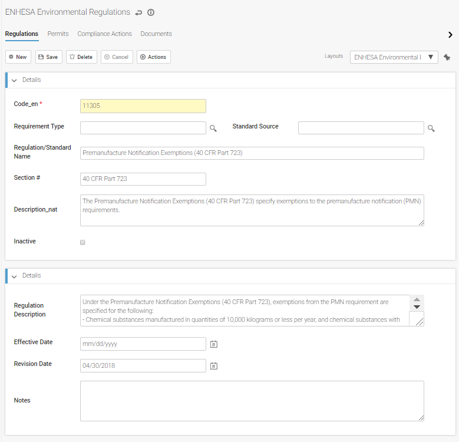
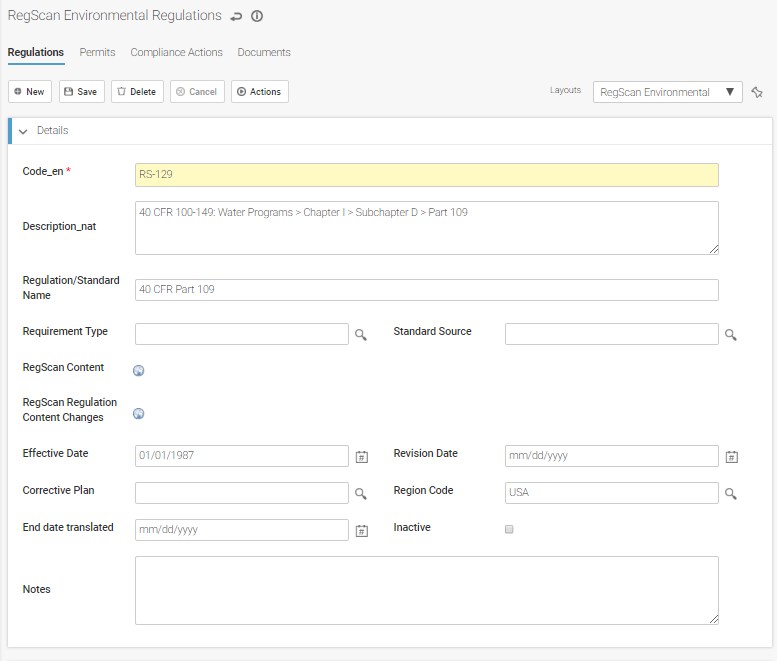

Regulatory content from ENHESA or RegScan can be imported into in the Legal & Other Requirements module in the Safety and Environmental Clouds, and updated regularly.
The "Regulatory Content Type" system setting determines whether imported regulatory content is stored as Environmental regulations or Safety legal requirements.
The appropriate connection to ENHESA or RegScan must be configured; see Setting Up an ENHESA Connection or Setting Up a RegScan Connection.
If the appropriate system settings are defined, applicability data from ENHESA will be refreshed every 30 days. If you want to force an update, on the Legal and Other Requirements list view, choose Actions»Refresh Requirements. You can check the Process Status & Log (ENHESA Import View) to see which records were added or updated (see Viewing Import Logs).
The regulations are added to the Legal & Other Requirements list (or updated, if previously downloaded). Click a link to view the regulation. Any applicability assessments completed in ENHESA for your location since the last refresh are added to the Applicability Assessment module (see Identifying Applicable Regulations).
Fields are editable (if you have appropriate permission), but any changes you make will be overwritten on every update. The Regulatory Link takes you to an ENHESA page from which you can access the regulatory source used by ENHESA, while the ENHESA Content link takes you to the ENHSA product where the content is found.

After the initial import, the regulatory content is updated automatically on the first day of each month. To force an update, on the Legal and Other Requirements list view, choose Actions»Refresh Requirements. When the process is complete, you can check the Process Status & Log (RegScan Import View) to see which records were added or updated (see Viewing Import Logs).
After an update:
